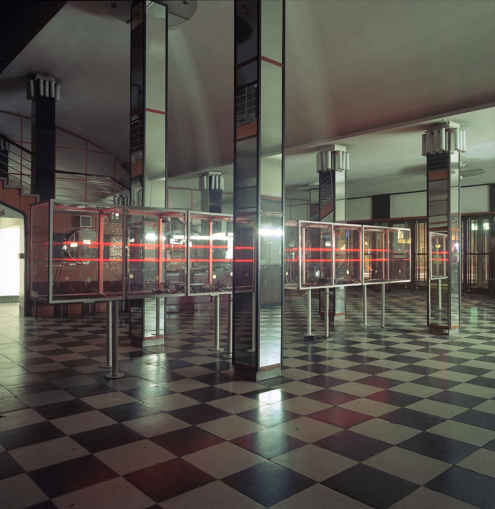
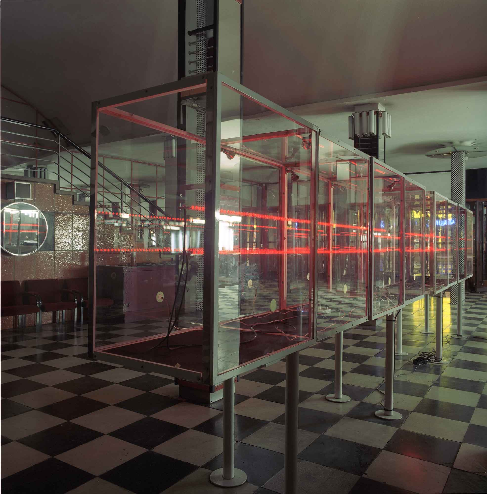
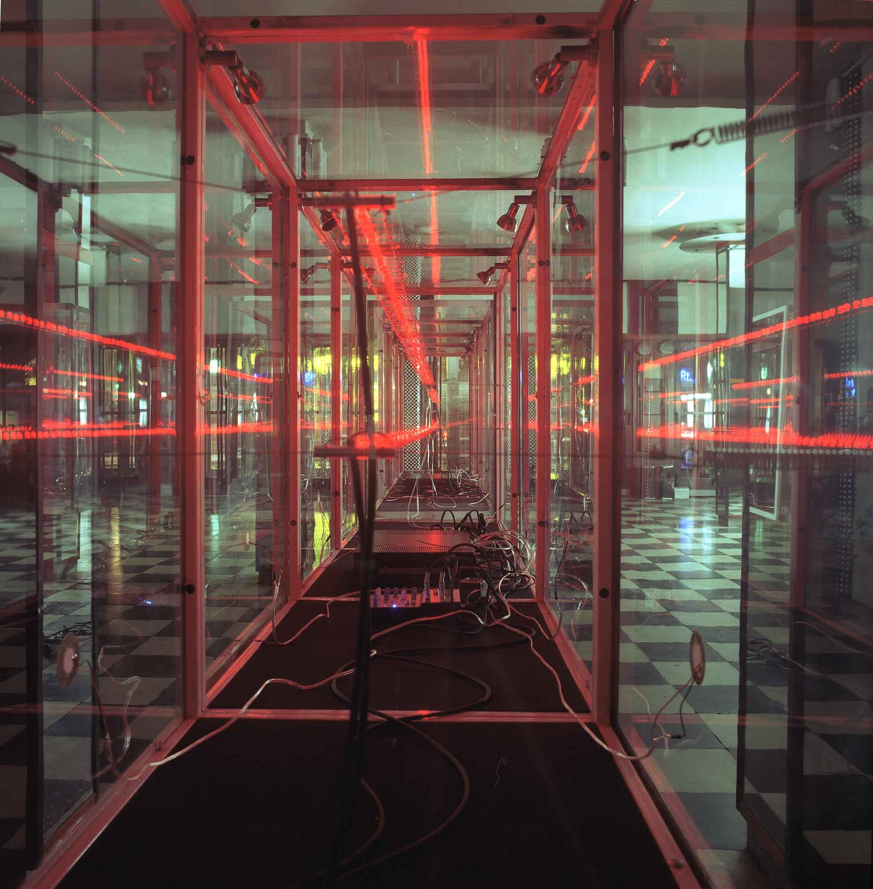

Atrium Movie Theatre, Budapest Autumn Festival
2004
Curated by Franciska Zolyom
"Cinemascope" was a sound and light installation built inside an excisting empty glass vitrines in the foyer
of an abandoned 30's movie theatre in the centre of Budapest. Two blinking led-lines were suspended
longitudinally across the glass boxes. Each of the 600 red lights were blinking with an individual frequency
approx 1Hz.
Four different noise waves were composed by 150 randomly blinking leds on each line. The sound was taken
directly from the led's leads then amplified and played back through piezo discs that were glued to the glass
box walls. The glass walls were working as a speakers amplifying piazos' vibrations and making them audible.


